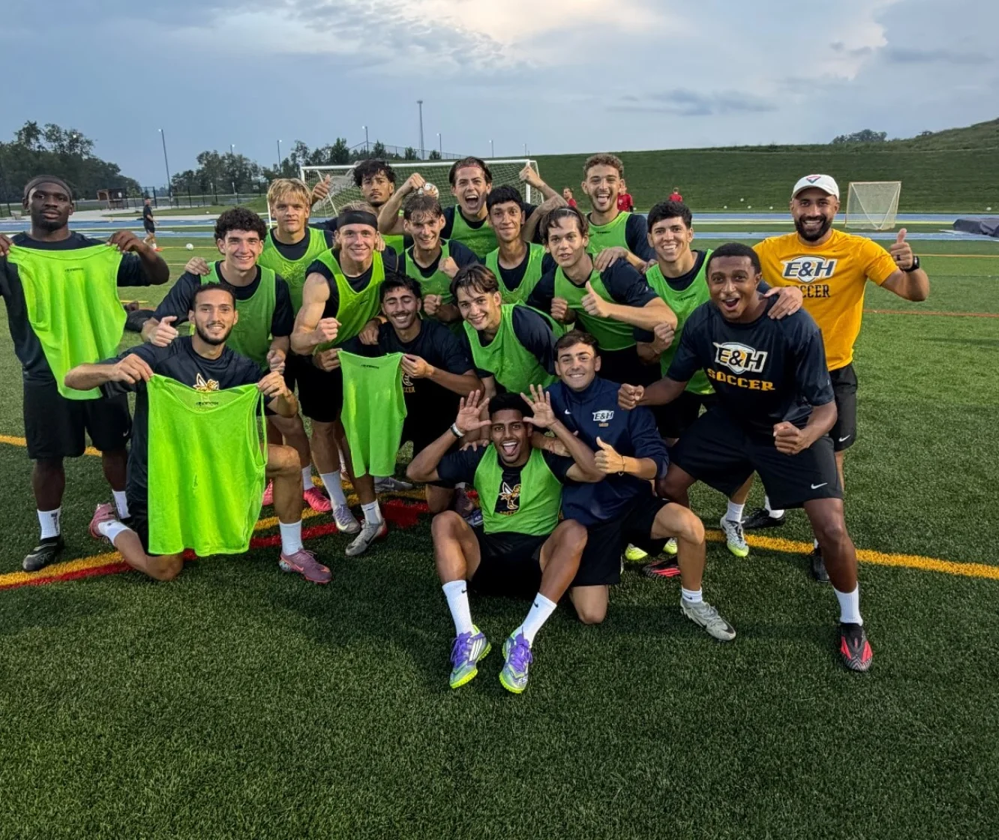
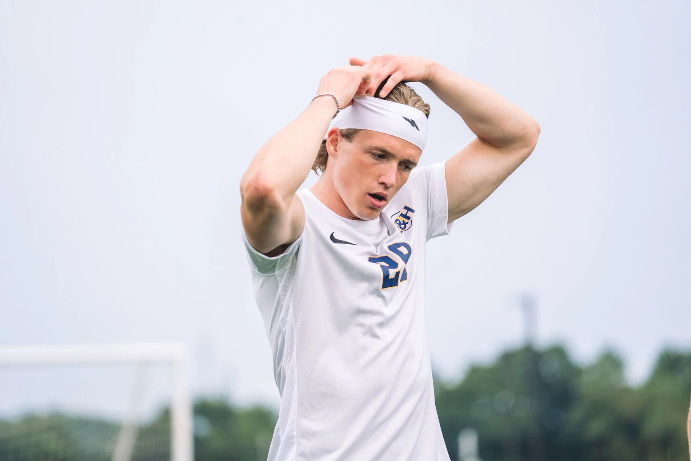

POSTSEASON
2026 · THE WASPS
SAC-Doppeltitel.
NCAA-Turnier.
Emory & Henry hat die reguläre SAC-Saison und das SAC-Turnier gewonnen. Jetzt läuft die nationale NCAA-Division-II-Meisterschaft.
SAC-Meister
SAC-Turniersieger
NCAA-Seed 3
Overall1–1–4
SAC0–0–1
Goal diff.+1


PLAYER WATCH
GERMANY · MIDFIELDER / FORWARD
NIKLAS
BORCK
#14 · Right-footed · Born Aug 6, 2003
VERIFIED MATCH SHEETS
TEAM PULSE
Scoring balance
15.0Shots / match
6.17Corners / match
4Unbeaten run
NCAA RUN
Next opponent
LIVE · ON DEMAND
Where to watch
Saison- und TurnierübertragungenSAC-Spiele laufen über FloCollege. Für das NCAA-Spiel am 15. November ist noch kein kostenloser Offizieller Stream bestätigt; offizielle Live-Stats sind verlinkt.
SUBSCRIPTIONStreamangebote ändern sich kurz vor Anpfiff manchmal. Offizielle Aufstellungen erscheinen üblicherweise erst kurz vor Spielbeginn in den Live-Stats; der Link bleibt dann für Spielverlauf und offizielles Box Score nutzbar.
MATCH LOG
Completed games
| Date | Opponent | Site | Result | Score |
|---|
SOUTH ATLANTIC CONFERENCE
Current table
- 1–4 Viertelfinale · Heimrecht
- 5–8 Viertelfinale · auswärts
- Ab 9 Kein SAC-Turnierplatz
| # | Team | SAC | Pts | Overall | Form |
|---|
Official SAC data. Loading latest update…
E&H IM NCAA-TURNIER
Zwei Titel, ein Ziel
Die Saison ist besser gelaufen als jede zuvor: erster Titel der regulären SAC-Saison, erster SAC-Turniertitel, automatischer NCAA-Startplatz. Emory & Henry ist als Nummer 3 der Super Region 2 gesetzt, überspringt die erste Runde und empfängt Lees-McRae. Ab dem nationalen Halbfinale wird in Kansas City gespielt.
8-0-2 · 26 Punkte
Viertelfinale bis Finale gewonnen
Freilos · Heimspiel
Der bisherige Weg
- SAC · TITELTAG
2:0 gegen Tusculum
Mit dem Heimsieg stand der erste SAC-Regular-Season-Titel der Programmgeschichte fest. SAC-Meldung ↗
- SAC · VIERTELFINALE
1:1 gegen Lenoir-Rhyne
Nach zwei torlosen Verlängerungen entschied Elfmeterschießen: 4:3 für E&H. SAC-Meldung ↗
- SAC · HALBFINALE
2:1 n.V. gegen Coker
Jean Charles Eyidi schoss die Wasps in der 94. Minute ins Finale. SAC-Meldung ↗
- SAC · FINALE
4:3 n.V. gegen Catawba
Marcelo Lopes traf in der 101. Minute zum ersten SAC-Turniertitel. Der Sieg brachte den automatischen NCAA-Startplatz. Spielbericht ↗
SUPER REGION 2
Der Turnierbereich von E&H
Die Setzpositionen 7–10 spielen am 13. November um den Einzug in die zweite Runde. Die Sieger treffen auf die Teams mit Freilos; E&H wartet als Seed 3 auf Lees-McRae.
Was noch kommen kann
Wie das 40-Team-Turnier funktioniert
Die NCAA Division II ist die nationale Meisterschaft nach der Conference-Saison. E&H ist jetzt sicher dabei; die folgende Runde ist die zweite Runde.
- Vier Bereiche mit je zehn Teams
- Das Feld ist in vier „Super-Regions“ aufgeteilt. E&H spielt in Super Region 2. Es ist ein K.-o.-Turnier: Wer verliert, fliegt aus.
- Freilos für die Seeds 1–6
- In der ersten Runde spielen nur 7 gegen 10 und 8 gegen 9. E&H hatte als Seed 3 freie Woche und wartet auf den Seed 6.
- Bis zu fünf Siege bis zum Titel
- Wer ein Freilos hat, braucht fünf Siege für die Meisterschaft: zweite Runde, dritte Runde, Viertelfinale, Halbfinale, Finale.
- Heimspiele bis Kansas City
- Die Spiele bis zum nationalen Viertelfinale finden auf Campusplätzen statt. Halbfinale und Finale werden im CPKC Stadium in Kansas City ausgetragen.
40 → 32 → 16 → 8 → 4 → 2 → 1 Meister
Quellen: NCAA-Feld und Seeds ↗ · Offizieller Bracket ↗ · NCAA-Championship-Seite ↗